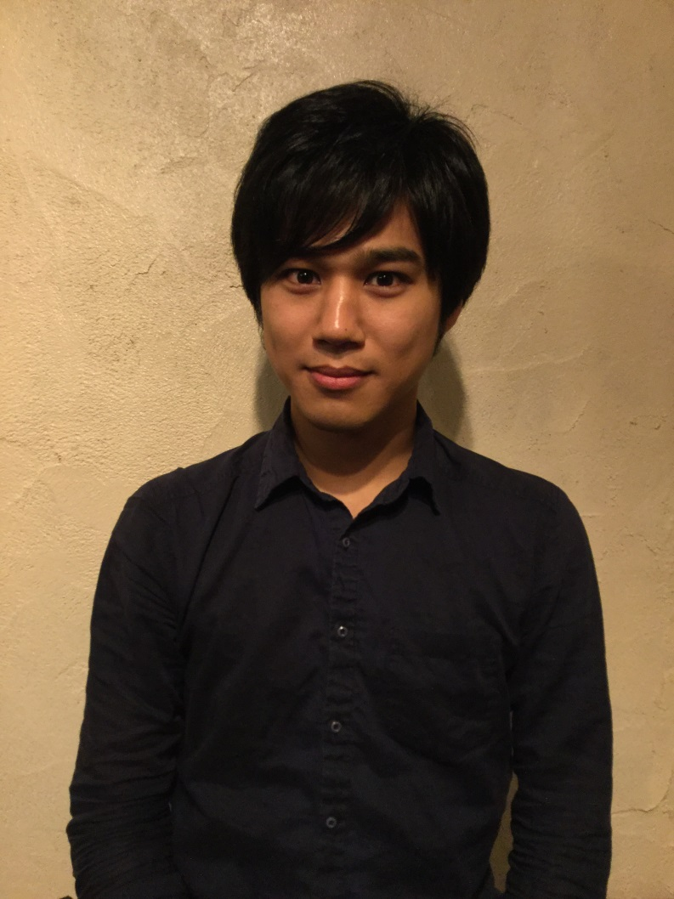
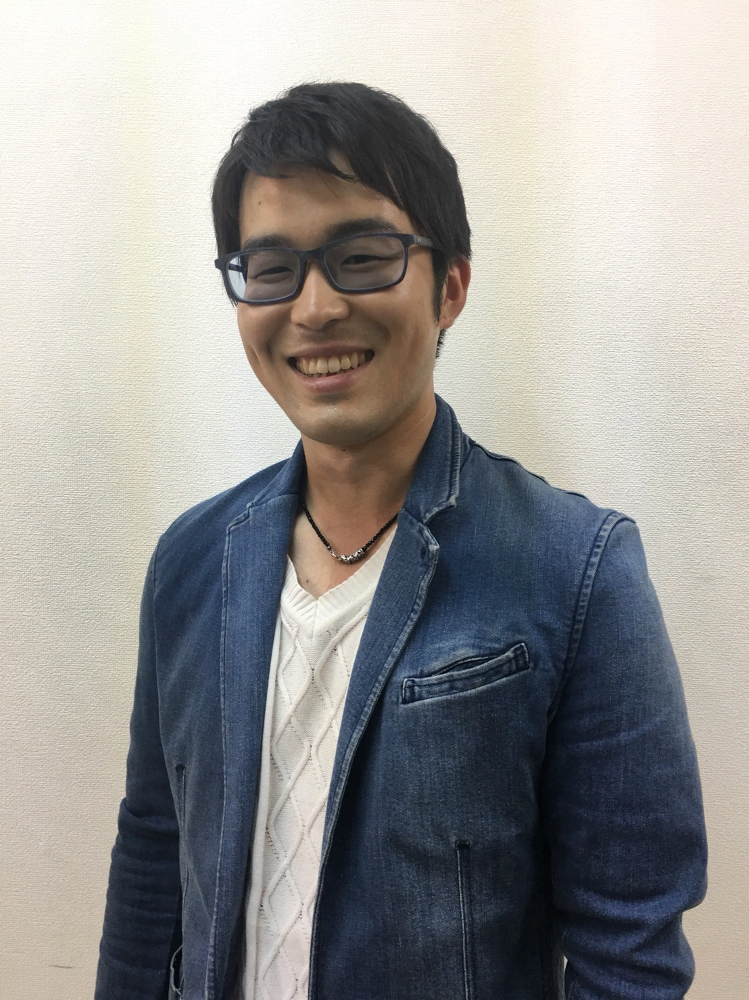
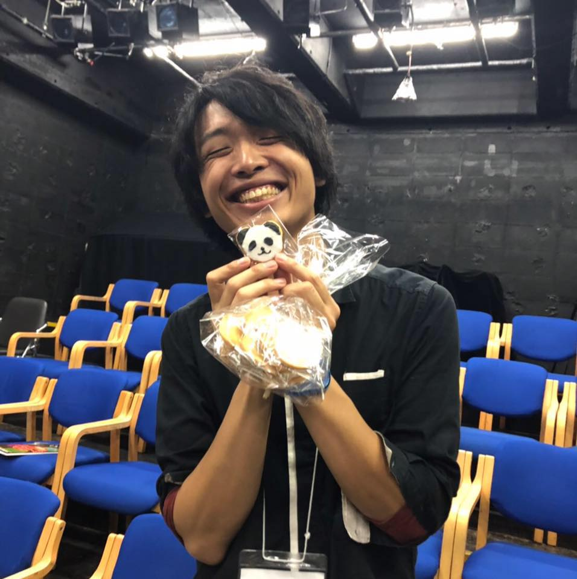

メンバー

藤井のりひこ
1992年2月4日生。茨城県出身。
- 専門学校声優学科を卒業後、フリーで舞台出演・当日運営スタッフ等として活動。
- 何もないよりはいいからと自身の演劇ユニットGEKIGAprojectを
- 何の活動もしないのに名乗り始め、現在に至る。
Twitter：@pgfn99

鶴谷皇輔
1990年 4月29日生まれ
劇団After+Five～リトル獣ウェイ～ 座長
自由映像集団「タマゴヤキ」にて作品製作中！
- オリジナルドラマCD『怪盗ではない海藤ルミ子』
- くろいぬケンネルvol.5「みんなのこども」
- 所属事務所、所属劇団作品での映像作品や舞台の演出、出演。
経歴
劇団HP
https://af5-ljw-yako.jimdo.com/Twitter：@_y_a_k_o_

朝比奈史樹
1992年 静岡生まれ
演劇集団nohup主宰
- 武蔵大学演劇研究部OB。高校から演劇を始め学生時代に他団体の演出助手などを経験
- 会社員としてはたらく傍で、2016年に演劇集団nohupを旗揚げ
- 笑って刺さる芝居をモットーに不定期に公演を行う
Twitter：@chickAM7